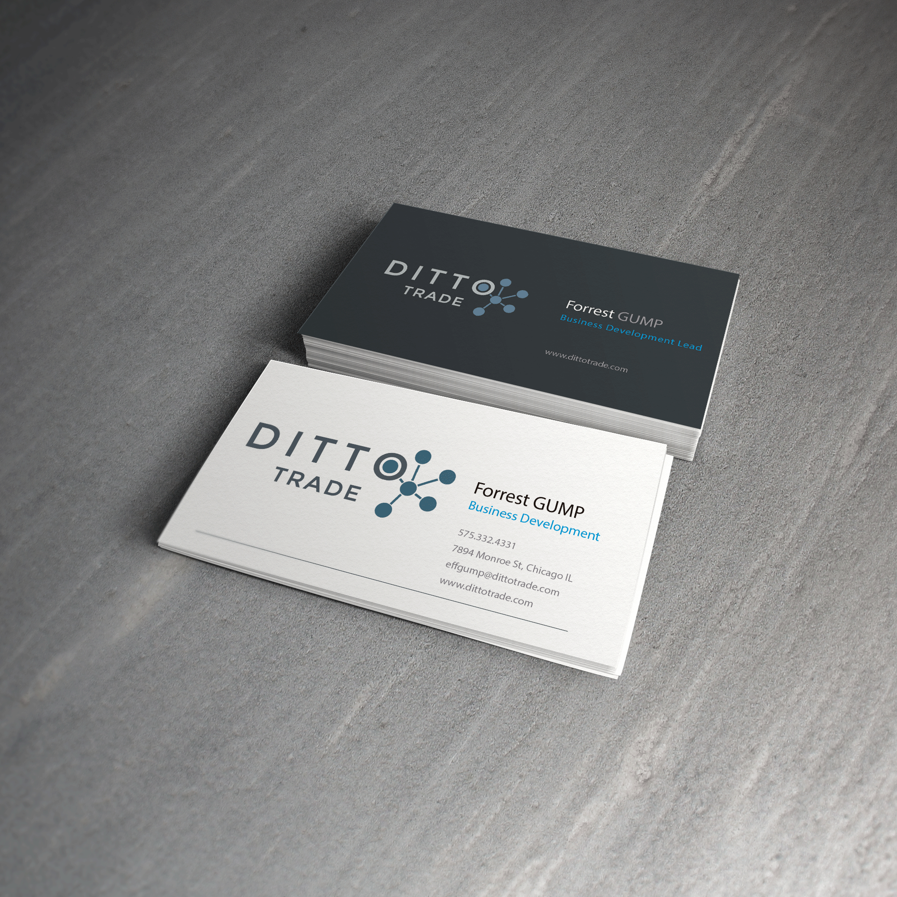

Design, like any process, is subject to evolution or at the very least prone to some form of progression. The term bottleneck is used differently in various fields, but the results of this phenomenon are is the same; there is a reduction. I like to think this is the way I approach design. I avoid superflurous and fleeting in order to achieve undiluted and timeless. Minimalistic isn't quite the right adjective so I like to think of it as streamlining. I'm always satisfied, but never content.
Skillset
UI/UX
Design is not immune to evolution's bottlenecks. The . I've worked with grid-systems like PURE and Bootstrap, but more recently I've found that Zurb Foundation fits better with my workflow.
Graphic Design
I believe effective branding is at the core of any design process. From logos to icons, I enjoy creating custom UI elements to accent the overall branding.
Marketing
My experience as a marketing manager for a financial services company helped me realize the lack of alignment between development, marketing, and sales. Thus, I made sense of those nonsensical marketing acronymns like SEO, CRM, CMS, SaaS as well as analytics and A/B testing.
My Work

Stationary
Business Cards
Partnerships
Logo
Logo
Ditto Redesign
Branding: Google+
Branding: Logo
Infographic
Stationary
Bull Blog
Bear Blog
Bull & Bear Blog
Stationary Mockup
Branding ideas for Ditto.
Carbon Chain
An ode to my biology days - This logo proposal worked with the unifying message the company was trying to market.
Branding: Partnerships
The company was a shifting its marketing to be more predominantly known as a technology tool for traders and this was going to be used to give to our partners to feature on their sites
Logo: Proposal
Dark Logo Color Scheme. For a little more pop.
Dark Theme
Adaptation of Updated Logo
Dark Theme
A tribute to Breaking-Bad, this periodic-logo was one of my favorites aestethically. It still coincided with the unity motif.
Google +
An intranet site that I had set up and this was the logo I adapted for it
Molecule
"Ditto-ing" had a connotation a less centralized approach than we preferred. The logo was developed when we began speaking toward a more "centralized" marketing stance.
Infographic
The previous instruction graphic for visitors to the site was outdated, so I adapted an infographic like approach to this. The next step would have been to make it a animated gif.